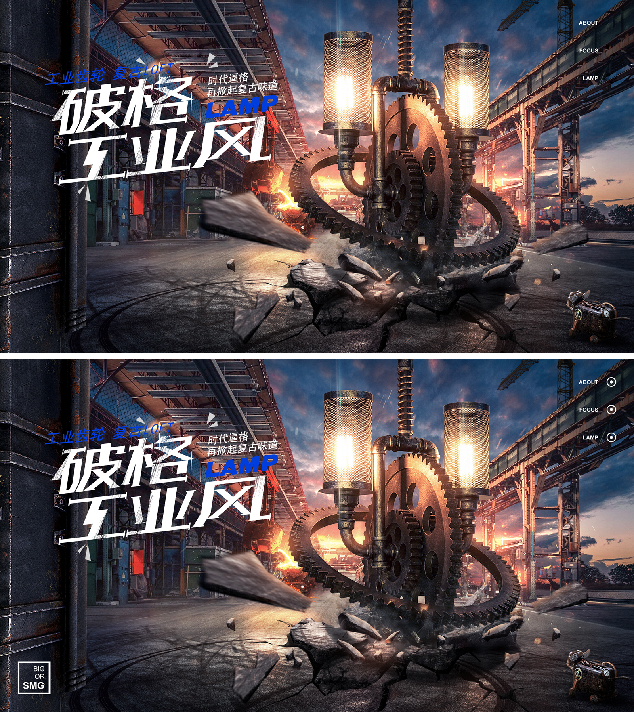
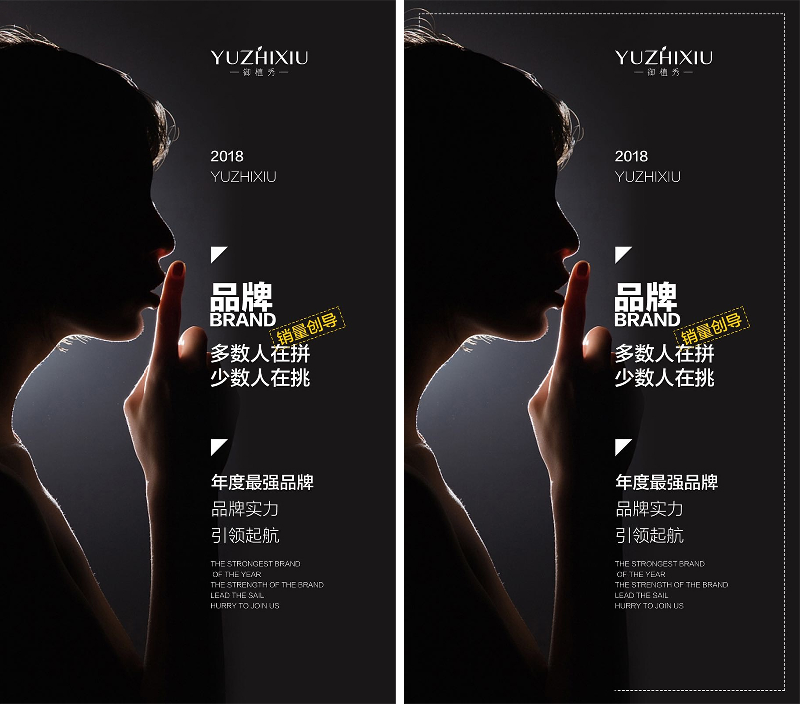

线框在设计环节中可以看做为点状元素、亦可以看做为线状元素，在之前文章《解密设计中的点线面》
中分别说过点状、线状元素的作用，而线框在设计中则可以同时兼顾这两优点，虽然是元素相同，但是
用的目的不同，发挥的作用也会有所不同，比如：
这里出现的线框元素就起到了一定的装饰、衬托画面的作用，以点线面的角度来看则符合点状元素的特
点，虽然这类元素对于作品整体而言只是次要的视觉元素，但是有与无的差别还是一目了然的，有此类
元素，画面则呈现出一种更加丰富、饱满的视觉感受；而无此类元素，给人的感觉虽然画面元素依然很
多，但是总带有单薄、不够饱满、缺少细节的感觉！

线框还有另一种很直观的作用，即：增强画面细节感、设计感，这一作用的线框在很多优秀的作品中都能看到，大到页面、小到优惠券、按钮。
“线框”在设计中有哪些妙用？
124人浏览 / 3人评论
在日常的设计工作中，线框是常用到的设计元素之一，在一些优秀的作品中也常常会出现，而对于一些设计师而言，
懂得参考优秀作品中用的设计元素，但却不知为什么用？用的目的是什么？也有些作品整体看起来会出现散乱、
区域划分不明显、缺少细节感等等的情况，那么又该从哪些方面入手解决呢？本期就与大家一起分析：
线框在设计中有哪些妙用？上述问题如何通过线框得到相应的解决！

相关文章
 如何避免设计作品“空”！？
如何避免设计作品“空”！？
 高点击率钻展，设计环节…
高点击率钻展，设计环节…
高点击率钻展，设计环节…
个人微信号
最新文章
- >如何有效避免设计作品“空”？
- >“线框”在设计中有哪些妙用？
- >设计修图，为什么如此实用？
- >应该从哪些点审查作品的不足？
- >详情页设计，应该从哪里入手？
- >配色中的色，从哪里来？
- >如何提升作品的整体设计感？